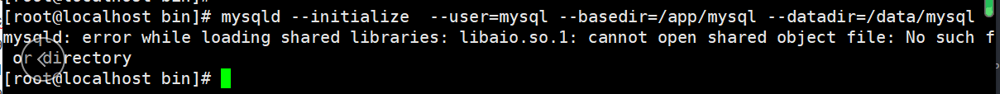
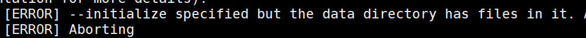

第一章 MySQL 大纲介绍¶
1、官方定义的MySQL DBA工作内容¶
（1）运维DBA
初级：各版本、各平台安装搭建、升级
中级：体系结构原理、基础管理（启动关闭、初始化配置文件管理、多实例管理、用户权限管理、基本SQL（增删改查））、
日志管理、备份与恢复、主从复制（构建、状态监控）
高级：高可用（MGR、InnoDB Cluster）、高性能（优化）
（2）开发DBA
懂至少一门开发语言 ：JAVA、Python
基本SQL语句深入学习（增删改查）、数据库结构设计（建模）
高级SQL：存储过程、函数、触发器、视图、事件
2、MySQL课程-2019-03月-中级DBA要求（80%以上）¶
（1）MySQL 5.7 安装部署（二进制）*****
编译自己扩展
（2）MySQL升级步骤扩展 ***
（3）MySQL5.7 体系结构原理 *****
（4）MySQL基础管理 *****
（5）基础SQL语句使用 *****
（6）SQL高级应用 ***
（7）Information_schema获取元数据 ***
（8）索引、执行计划管理（基础优化）*****
（9）存储引擎 *****
（10）日志管理 *****
（11）备份与恢复 ******
（12）主从复制及架构演变 ******
（13）传统的高可用及读写分离（MHA&Atlas）****
（14）传统分布式架构设计与实现-扩展（Mycat--->DBLE,DRDS）**
（15）MySQL 5.7 高可用及分布式架构-扩展（MGR,InnoDB Cluster）***
（16）MySQL优化（安全、性能） ****
（17）MySQL 监控（zabbix、Open-falcon） ****
(18) RDS(阿里云课程) *****
额外要会的：
Redis
mongodb
了解:
PG
Oracle
3、DBA职业素养¶
3.1、人品¶
3.2¶
3.2.1、严谨¶
3.2.2 请收起你的好奇心！！！！！¶
3.3、细心¶
3.4、心态¶
3.5、熟悉操作系统（精通）¶
3.6、熟悉公司业务¶
3.7、熟悉行业¶
3.8、喜欢数据库¶
第二章: MySQL 介绍和安装¶
1、什么是数据？¶
数据：文字、图片、视频。。。人类认知的数据表现方式
计算机：二进制、16进制的机器语言
基于数据的重要性和复杂性的不同，我们可能有不同的管理方式。
哪些数据是适合存储到数据库的呢？
重要性比较高的
关系较复杂的数据
2、什么是数据库管理系统（DBMS）？¶
RDBMS: 关系型数据库管理系统
比较适合于,安全级别要求高的数据以及关系较复杂的数据
NoSQL:非关系型数据库管理系统
适合于高性能存取数据,一般是配合RDBMS进行使用的
针对大数据处理分析,分布式架构更加擅长
3、数据库管理系统种类¶
RDBMS ：
MySQL 、Oracle、MSSQL（SQL Server）、PG
NoSQL：Not Only SQL
键-值（key-value）：Redis, memcached
文档（document）：Mongodb
4、MySQL简介及产品线¶
4.1 MySQL行业主流版本：¶
4.2 企业版本选择(MySQL分支版本),笔试题¶
4.3 版本选择建议要上新环境¶
4.4 课程版本：¶
4.5 如何获取MySQL软件¶
企业版：Enterprise , 互联网行业一般不选择.
社区版本：选择
源码包：source code .tar.gz
通用二进制
面试题:
你们公司用什么版本数据库? 具体什么小版本号?
5.6.20 5.6.34 5.6.36 5.6.38 5.6.40
5.7.18 5.7.20 5.7.22
5.7.20 17年9月13号
5.6.44 19年3月15号
5、MySQL二进制安装¶
5.1.创建软件目录:¶
5.2. 解压并改名为mysql¶
cd app
wget https://downloads.mysql.com/archives/get/p/23/file/mysql-5.7.20-linux-glibc2.12-x86_64.tar.gz
tar zxvf mysql-5.7.20-linux-glibc2.12-x86_64.tar.gz -C ./
mv mysql-5.7.20-linux-glibc2.12-x86_64 mysql
ls -l /app/mysql/
total 36
drwxr-xr-x 2 root root 4096 Mar 4 14:55 bin
-rw-r--r-- 1 7161 31415 17987 Sep 13 2017 COPYING
drwxr-xr-x 2 root root 55 Mar 4 14:55 docs
drwxr-xr-x 3 root root 4096 Mar 4 14:55 include
drwxr-xr-x 5 root root 229 Mar 4 14:55 lib
drwxr-xr-x 4 root root 30 Mar 4 14:55 man
-rw-r--r-- 1 7161 31415 2478 Sep 13 2017 README
drwxr-xr-x 28 root root 4096 Mar 4 14:55 share
drwxr-xr-x 2 root root 90 Mar 4 14:55 support-files
修改环境变量:
5.3. 建立mysql用户和组(如果已有可忽略)¶
5.4. 创建相关目录并修改权限¶
5.5 初始化数据（建库）¶
方法一:
初始化数据，初始化管理员的临时密码
mysqld --initialize --user=mysql --basedir=/app/mysql --datadir=/data/mysql
2019-04-18T03:21:53.381108Z 0 [Warning] TIMESTAMP with implicit DEFAULT value is deprecated. Please use --explicit_defaults_for_timestamp server option (see documentation for more details).
2019-04-18T03:21:54.583415Z 0 [Warning] InnoDB: New log files created, LSN=45790
2019-04-18T03:21:54.697859Z 0 [Warning] InnoDB: Creating foreign key constraint system tables.
2019-04-18T03:21:54.760821Z 0 [Warning] No existing UUID has been found, so we assume that this is the first time that this server has been started. Generating a new UUID: 1daa0c57-6189-11e9-bc80-000c294234c8.
2019-04-18T03:21:54.770856Z 0 [Warning] Gtid table is not ready to be used. Table 'mysql.gtid_executed' cannot be opened.
2019-04-18T03:21:54.772016Z 1 [Note] A temporary password is generated for root@localhost: 9LN.fh_Ea#uU

image.png

image.png
新特性重要说明: 5.7开始,MySQL加入了全新的 密码的安全机制: 1.初始化完成后,会生成临时密码(显示到屏幕上,并且会往日志中记一份) 2.密码复杂度:长度:超过12位? 复杂度:字符混乱组合 3.密码过期时间180天
方法二 :
初始化数据，初始化管理员的密码为空
\rm -rf /data/mysql/*
[root@db01 ~]# mysqld --initialize-insecure --user=mysql --basedir=/app/mysql --datadir=/data/mysql
2019-04-18T03:37:43.146018Z 0 [Warning] TIMESTAMP with implicit DEFAULT value is deprecated. Please use --explicit_defaults_for_timestamp server option (see documentation for more details).
2019-04-18T03:37:43.892132Z 0 [Warning] InnoDB: New log files created, LSN=45790
2019-04-18T03:37:43.970412Z 0 [Warning] InnoDB: Creating foreign key constraint system tables.
2019-04-18T03:37:44.029490Z 0 [Warning] No existing UUID has been found, so we assume that this is the first time that this server has been started. Generating a new UUID: 5378f3b3-618b-11e9-9164-000c294234c8.
2019-04-18T03:37:44.041469Z 0 [Warning] Gtid table is not ready to be used. Table 'mysql.gtid_executed' cannot be opened.
2019-04-18T03:37:44.042348Z 1 [Warning] root@localhost is created with an empty password ! Please consider switching off the --initialize-insecure option.
[root@db01 ~]#
[root@db01 ~]# cd /data/mysql/
[root@db01 mysql]# ll
total 110628
-rw-r----- 1 mysql mysql 56 Apr 18 11:37 auto.cnf
-rw-r----- 1 mysql mysql 419 Apr 18 11:37 ib_buffer_pool
-rw-r----- 1 mysql mysql 12582912 Apr 18 11:37 ibdata1
-rw-r----- 1 mysql mysql 50331648 Apr 18 11:37 ib_logfile0
-rw-r----- 1 mysql mysql 50331648 Apr 18 11:37 ib_logfile1
drwxr-x--- 2 mysql mysql 4096 Apr 18 11:37 mysql
drwxr-x--- 2 mysql mysql 8192 Apr 18 11:37 performance_schema
drwxr-x--- 2 mysql mysql 8192 Apr 18 11:37 sys
[root@db01 mysql]#
注释：5.6初始化的区别
/application/mysql/scripts/mysql_install_db --user=mysql --datadir=/application/mysql/data --basedir=/application/mysql
5.6 书写默认配置文件¶
vim /etc/my.cnf
[mysqld]
user=mysql
basedir=/app/mysql
datadir=/data/mysql
server_id=6
port=3306
socket=/tmp/mysql.sock
[mysql]
socket=/tmp/mysql.sock
prompt=3306 [\\d]>
5.7 配置启动脚本:¶
[root@db01 mysql]# cd /app/mysql/support-files
[root@db01 support-files]# ./mysql.server start
Starting MySQL.Logging to '/data/mysql/db01.err'.
SUCCESS!
cp mysql.server /etc/init.d/mysqld # 这种是centos6的软件启动管理方式
5.8 使用systemd管理mysql¶
cat > /etc/systemd/system/mysqld.service <<EOF
[Unit]
Description=MySQL Server
Documentation=man:mysqld(8)
Documentation=http://dev.mysql.com/doc/refman/en/using-systemd.html
After=network.target
After=syslog.target
[Install]
WantedBy=multi-user.target
[Service]
User=mysql
Group=mysql
ExecStart=/app/mysql/bin/mysqld --defaults-file=/etc/my.cnf
LimitNOFILE = 5000
EOF
注意：将原来模式启动mysqld先关闭，然后再用systemd管理。
6. 安装后的简单管理¶
[root@db01 ~]# mysqladmin -uroot -p password 123 #root用户设置密码
Enter password: #输入原密码。就是初始化的密码
mysqladmin: [Warning] Using a password on the command line interface can be insecure.
Warning: Since password will be sent to server in plain text, use ssl connection to ensure password safety.
5.6版本:
select user,password,host from mysql.user;
5.7 中用户基本信息
select user,authentication_string,host from mysql.user;
desc mysql.user;
小结: 1.版本 (主流版本的GA时间了解一下)
5.6 5.7
5.6.38 5.7.20 ==>20170913 发行
5.6 和5.7的区别
(1) 初始化方式变了
mysql_install_db
mysqld --initialize-insecure
(2) 用户安全
12位
180天
4种复杂度
(3)密码字段
authentication_strings
2.安装方法:
3.建库(初始化数据库)
4.简易的配置文件/etc/my.cnf
- 管理员密码修改
忘记密码修改¶
1.停止mysql数据库
/etc/init.d/mysqld stop
（或者直接 kill -9 [PID] 杀进程！）
2.执行如下命令
mysqld_safe --user=mysql --skip-grant-tables --skip-networking &
3.使用root登录mysql数据库
mysql -u root mysql
4.更新root密码
mysql> UPDATE user SET Password=PASSWORD('newpassword') where USER='root';
最新版MySQL请采用如下SQL：
mysql> UPDATE user SET authentication_string=PASSWORD('newpassword') where USER='root';
5.刷新权限
mysql> FLUSH PRIVILEGES;
6.退出mysql
mysql> quit
7.重启mysql
/etc/init.d/mysqld restart
8.使用root用户重新登录mysql
mysql -uroot -p
Enter password: <输入新设的密码newpassword>
配置root用户可以远程登录¶
mysql -uroot -p
use mysql
select host,User from mysql.user where user="root";
update mysql.user set host='%' where User='root' and host='localhost' limit 1;
flush privileges;
简洁版¶
# mysql 5.7.20 二进制安装
mkdir -p /app
cd /app
wget https://downloads.mysql.com/archives/get/p/23/file/mysql-5.7.20-linux-glibc2.12-x86_64.tar.gz
tar zxvf mysql-5.7.20-linux-glibc2.12-x86_64.tar.gz -C ./
mv mysql-5.7.20-linux-glibc2.12-x86_64 mysql
echo 'export PATH=/app/mysql/bin:$PATH' >>/etc/profile
source /etc/profile
useradd mysql
mkdir /data/mysql -p
chown -R mysql.mysql /app/*
chown -R mysql.mysql /data/*
#初始化数据，初始化管理员的临时密码
#mysqld --initialize --user=mysql --basedir=/app/mysql --datadir=/data/mysql
#初始化数据，初始化管理员的密码为空
\rm -rf /data/mysql/*
mysqld --initialize-insecure --user=mysql --basedir=/app/mysql --datadir=/data/mysql
cat > /etc/my.cnf <<EOF
[mysqld]
user=mysql
basedir=/app/mysql
datadir=/data/mysql
server_id=6
port=3306
socket=/tmp/mysql.sock
[mysql]
socket=/tmp/mysql.sock
prompt=3306 [\\d]>
EOF
# centos6启动管理方式
# cp /app/mysql/support-files/mysql.server /etc/init.d/mysqld
# /etc/init.d/mysqld start
# /etc/init.d/mysqld stop
# systemd 管理mysql
cat > /etc/systemd/system/mysqld.service <<EOF
[Unit]
Description=MySQL Server
Documentation=man:mysqld(8)
Documentation=http://dev.mysql.com/doc/refman/en/using-systemd.html
After=network.target
After=syslog.target
[Install]
WantedBy=multi-user.target
[Service]
User=mysql
Group=mysql
ExecStart=/app/mysql/bin/mysqld --defaults-file=/etc/my.cnf
LimitNOFILE = 5000
EOF
systemctl daemon-reload
systemctl start mysqld
# 管理员修改密码
mysqladmin -uroot -p password
# 配置root用户可以远程登录
mysql -uroot -p123 -e "select host,User from mysql.user where user='root';"
mysql -uroot -p123 -e "update mysql.user set host='%' where User='root' and host='localhost' limit 1;
flush privileges;"